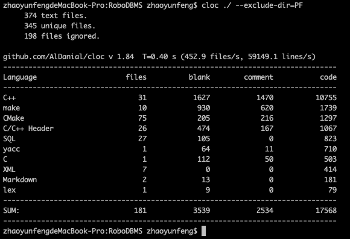

最终，我实现了一个支持丰富语法的单用户的关系数据库管理系统，具体支持的内容有：
支持数据类型
支持条件表达式
支持运算
比较运算：=、 !=、 <、 <=、 >、 >=、 in、 not in、like
逻辑运算：and、or、not
算术运算：+、-、*、/、%
其他运算
参与运算的元素
支持语法
DDL
数据库相关：创建、删除、使用、显示数据库
表相关：创建、删除、更名
列相关：增加、删除、更名、更新（增加+删除）
完整性约束相关：主键增删、外键增删
索引相关
DML
增
删
复杂条件表达式
完整性约束检查
用索引优化遍历
改
查
支持*查询所有列
多表连接（不限数目）
查询优化
嵌套查询
分组查询
排序
除此之外还提供了：
我的系统分为七个模块，分别是SP、PF、RM、IX、SM、QL、PS，各个模块的作用如下：
每个表都有一个与其同名的字符串池文件来存储varchar，用类似操作系统中管理内存碎片的方式来对varchar进行安放，采用的匹配方式是first-fit，最终后面的程序中根据字符串池文件spName、字符串开始存放的位置offset以及字符串长度length就可以或得到varchar的具体值，这也是Varchar结构类型定义的三个元素。
使用斯坦福CS346课程中提供的代码重新组织后得到。
RM模块的实现比较trival，在每一页前面加个header存链表用来将记录页链起来，同时还存个bitmap来加速查找。
我参考了网上开源的基于内存的只支持int类型的B+树实现了支持各种类型的、可持久化存储的完整的B+树结构。 首先，我的索引中存储的value是RID，key是被索引的列（可以是任意列），而比较的时候比较的是(key,value)对儿，因此key重复也没有关系，因为RID总是不一样的。 而关于key的比较，只要提供一个attrType、attrLength以及key指针就能根据类型的不同对key进行比较，而当key是多列的时候，我们以固定的格式对key进行组织，首先要求attrType是ATTRARRAY，代表key是一个复合key，然后attrLength存key的长度，然后key以attr1Type、attr1Llength、attr1Value、attr2Type、attr2Length、attr2Value.....的方式进行组织，这样就可以一次从key中解析出列的个数、每个列的类型、长度以及值，从而完成复合key的比较。
整个数据库管理系统的meta信息（存储各个数据库的名字）借用页式文件系统存在了DBMS.meta文件中，每个数据库的信息（存储所有表的名字以及meta信息）由于比较大一页存不下直接以文件的形式存到了对应目录的DB.meta里。 一个表的meta信息（对应TableMeta结构体）主要包括：列信息、主键信息、外键信息、索引信息。 对于系统管理的大部分功能，主要由SM_Manager来完成，介于很多操作需要在具体的表上进行，我抽象出了SM_Table这一类，对一个具体的类进行操作，某些查询操作也交给它来做。 某些需要说明的操作实现方式如下：
主外键均支持复合键，即多列共同组成
外键建立时自动建立索引，加速完整性约束
对于主外键完整性约束检查包含：
增加列的时候我的做法是新建一个表，然后遍历原来的这个表，在每条记录后多开辟一块儿空间放新列，然后插入到新表中去，最后将新表（包括记录和索引文件等）改名回原来的。
删除列的时候需要判断该列是否牵扯到已有的索引、主键和外键，是的话不允许删除，是为了防止误操作（实在要删的话可以先把这些约束drop掉再删），否则与增加的方式类似，新建个表一条条插入然后改名。
更新列，如果只改名的话直接改就可以，因为我在存储的时候将列名的字符串均转化成了ColumnId，表示这列是表中的第几列，所以不管存在索引、主键、外键什么的其中记录的列都是id，因此改名对此无影响；如果改了类型我认为原来的数据也不能要了，所以要先删除列，再增加一列新的。
数据库改名，也是直接改就可以，因为各类信息中记录的表也是以TableId的形式记录的。
该部分主要对增删查改进行执行，为了方便多表连接，我们额外引入了QL_MutilTable类，该类以一个std::vector
在进行操作时，涉及到whereClause语句的时候，需要考虑表达式的计算问题，而我的表达式支持支持比较复杂，因此这里详细说一下：因为我把表达式都做成了语法树的样子，而如果将所有的表达式组织成一棵，那么我在查询时很难利用索引对其进行优化，索引优化需要左边是列的值，右边是已知的值，中间是=、!=、<、<=、>、>=。所以我将and运算单独拎出来，将表达式组成成若干个表达式的与，这样每个可以分别用索引优化，还可以支持联合索引进行优化， 但需要每个表达式的形式比较简单：即为column op value或者value op column的形式，其中value可以是常量，也可以是在之前的枚举中已经被计算出来的值，实际优化的时候会穷举所有的索引，看哪个可以用上，且解决的表达式较多用哪个。
关于查询优化的实现，除了尽可能利用索引来加速，我还对表的枚举顺序进行了排列然后对需要进行检索的次数进行了一个简单估计，最后选取次数最少的那个排列，最终的结果看起来是将小表排在最开头，最大的表在中间较好，在测试环境下也确实发现这样最优。
关于如何支持聚集函数，我们需要对结果进行二次扫描。我的表达式有一个pushUp()的操作，为了支持min(age+1)以及min(age)+1这样的表达式的计算，我在第一遍扫描的时候会把每个出现的聚集函数以及它所属的分组group这样一个二元组映射到一个表达式（其中group是该行分组的字段形成string，如果不分组的话都是'NULL'字符串，这样结果就只有一列；不同位置的相同聚集函数例如min(age)算不同的），并且在表达式进行到聚集函数这一步更新这个表达式，并且停止pushUp()，代表更上方的表达式的值不能确定；第二遍的时候取出这个表达式的表达式然后pushUp()不断将值上传到语法树的根部得到整个表达式最终的值，然后插入到最终的结果中去，并且保证每个group只计算一次。
关于如何支持嵌套查询，我将select的结果全部存到了一个临时表中，直接返回该表的TableMeta就可以和其他表一样被from，而如果要支持表达式里的，我们则只能select一列，并且在解析到这样的语句后立马最后返回这一列的所有数据。
关于如何支持order by语句，我的方法比较粗暴，就是在给定列上建索引，然后按顺序遍历，把得到的记录再插入一遍，然后把之前的全部删除，这样再次遍历的时候就是按照给定列顺序的了，这样需要保证输入的表之前除了插入是没有进行过其他操作的，而在本数据库管理系统中只有select出来的临时表会用到这个所以是没有问题的。
PS模块我使用了flex + bison工具进行命令的解析，比较麻烦的地方在于对各种表达式优先级的处理，具体原理不再赘述，语法详情见PS/flex.l和bison.y。
PS模块中的PS_Expr类用来表示语法树的一个节点，叶子节点可以是常量、常量列表、列，支持二元运算，其中的pushUp()函数用来综合左右儿子表达式的值以及运算符来获得该节点的值，在不断枚举表项的同时将列的值带入最终pushUp()传到根节点得到整个表达式的值。
关于模糊查询的实现我自己实现了一个记忆化搜索，对于[]以及[^]内的字符集事先预处理来加快速度，详情参考utils/Utils.h/like的实现。
各模块代码存放在以模块名命名的目录下。 每个模块下也有一些对模块自身的功能测试，以test开头的cpp文件。 test目录下存放着一些总的测例，从名称中可以看出其测的内容。 utils目录下写了一些可能用到的工具。 Attr.h定义了支持的数据类型。 Const.h定义了一些常量。 主程序入口是根目录下的main.cpp，当不带输入参数时从标准输入进行命令的读取，否则从代码中指定的文件中进行命令的读取与执行。
IX部分主要接口：
xclass IX_IndexHandle {public://插入删除索引RC InsertEntry(void *key, const RM_RID &value);RC DeleteEntry(void *key, const RM_RID &value);}class IX_IndexScan {public://打开一个满足条件的遍历器RC OpenScan(const IX_IndexHandle &indexHandle,Operator compOp,void *value);//得到下一个满足条件的值RC GetNextEntry(RM_RID &rid);//关闭遍历RC CloseScan();//得到当前遍历的值void *getCurrentKey();
SM部分主要接口：
xxxxxxxxxxclass SM_Manager {public://打开数据库RC OpenDb(const char *dbName);//关闭数据库RC CloseDb();//建表RC CreateTable(const char *tbName, std::vector<ColumnDesc> *columnList);//删表RC DropTable(const char *tbName);//加索引RC AddIndex(const char *tbName, const char *indexName, std::vector<const char *> *columns);//删索引RC DropIndex(const char *tbName, const char *indexName);//创建数据库RC CreateDb(const char *dbName);//删除数据库RC DropDb(const char *dbName);//打开数据库RC UseDb(const char *dbName);//增加列RC AddColumn(const char *tbName, ColumnDesc columnDesc);//删除列RC DropColumn(const char *tbName, const char *columnName);//更新列名RC UpdateColumn(const char *tbName, const char *columnName, const char *newColumnName);//更新列RC UpdateColumn(const char *tbName, const char *columnName, ColumnDesc columnDesc);//展示目前所有的数据库RC ShowDatabases();//显示当前数据库下的所有表RC ShowTables();//显示表的相关信息RC DescTable(const char *tbName);//增加主键RC AddPrimaryKey(const char *tbName, std::vector<const char *> *columns);//增加外键RCAddForeignKey(const char *name, const char *foreignTable, std::vector<const char *> *foreignColumns,const char *primaryTable,std::vector<const char *> *primaryColumns);//删除主键RC DropPrimaryKey(const char *table);//删除外键RC DropForeignKey(const char *foreignTable, const char *name);//重命名表RC RenameTable(const char *oldTbName, const char *newTbName);};class SM_Table {public://从某一列中获取数据char *getColumnData(char *record, ColumnId columnId);//获取某一列的数据，如果没有返回NULL//根据一个表达式列表给一行设置数据RCsetRecordData(char *record, std::vector<ColumnId> *columnIdList, std::vector<AttrValue> *constValueList);//插入一条记录RC insertRecord(char *record, bool influencePrimaryKey = true)；//删除一条记录RC deleteRecord(char *record, const RM_RID &rmRid, bool influencePrimaryKey = true);//删除满足给定条件的行RC deleteWhereConditionSatisfied(std::vector<PS_Expr> *conditionList);//更新满足给定条件的行RC updateWhereConditionSatisfied(std::vector<std::pair<std::string, PS_Expr> > *assignExprList,std::vector<PS_Expr> *conditionList);//显示该表的头num条记录信息，num取-1代表所有void showRecords(int num);//将一行中某一列的数据转化为字符串std::string formatColumnToString(ColumnId columnId, char *data);//将attrValue转化成字符串std::string formatAttrValueToString(ColumnId columnId, AttrValue);//根据列把attrValue完善RC completeAttrValueByColumnId(ColumnId columnId, AttrValue &attrValue);//创建索引RC createIndex(int indexNo, IndexDesc indexDesc, bool allowDuplicate = true);//获得索引的键长度int getIndexKeyLength(IndexDesc indexDesc);//从一个记录中组合出索引的键RC composeIndexKeyByRecord(char *record, IndexDesc indexDesc, char *key);//获取一个key在index中出现的次数int getIndexKeyCount(char *key, int indexNo);//获取一个key在主键中出现的次数int getPrimaryKeyCount(char *key);//获取一个key在外键中出现的次数int getForeignKeyCount(char *key, int foreignKeyIndexIndex);//获取总记录条数int count();//从RID获得记录信息RC getRecordFromRID(RM_RID &rmRid, RM_Record &rmRecord);//从一系列限制中返回一个RM_RID liststd::vector<RM_RID> filter(std::vector<PS_Expr> *conditionList, bool allSatisfied = false);//获得记录长度int getRecordSize() const;//将该表按给定列排序RC orderBy(std::vector<const char *> *orderByColumn, bool increasingOrder, int limitOffset, int limitLength);//将该表提取成一个表达式列表std::vector<PS_Expr> *extractValueInRecords();//判断是否可以插入外键bool validForeignKey(IndexDesc indexDesc, TableId primaryTableId);//增加列RC addColumn(ColumnDesc column);//删除列RC dropColumn(ColumnId deleteColumnId);};
QL部分主要接口:
xxxxxxxxxxclass QL_Manager {public://查询RCSelect(std::vector<PS_Expr> *valueList, std::vector<TableMeta> *tableMetaList, std::vector<PS_Expr> *conditionList,std::vector<PS_Expr> *groupByList, std::vector<const char *> *orderByColumn = nullptr,bool increaseOrder = true,int limitOffset = 0, int limitLength = -1);//将查询结果变为一个表TableMetagetTableFromSelect(const char *name, std::vector<PS_Expr> *valueList, std::vector<TableMeta> *tableMetaList,std::vector<PS_Expr> *conditionList,std::vector<PS_Expr> *groupByList,std::vector<const char *> *orderByColumn = nullptr,bool increaseOrder = true,int limitOffset = 0, int limitLength = -1);//将查询结果变为一个表达式列表std::vector<PS_Expr> *getExprListFromSelect(std::vector<PS_Expr> *valueList, std::vector<TableMeta> *tableMetaList,std::vector<PS_Expr> *conditionList,std::vector<PS_Expr> *groupByList,std::vector<const char *> *orderByColumn = nullptr,bool increaseOrder = true,int limitOffset = 0, int limitLength = -1);//从文件一次性插入一大堆RC Insert(const char *tbName, const char *fileName);//插入一行RC Insert(const char *tbName, std::vector<const char *> *columnList, std::vector<AttrValue> *constValueList);//删除满足条件的行RC Delete(const char *tbName, std::vector<PS_Expr> *conditionList);//更新满足条件的行为给定值RC Update(const char *tbName, std::vector<std::pair<std::string, PS_Expr> > *assignExprList,std::vector<PS_Expr> *conditionList);//输出表的行数RC Count(const char *tbName);//只删record和stringpool，主要是为了删除查询过程中的中间结果void DestroyTable(const char *tbName);};class QL_MultiTable {public://返回多表查询结果为一个表TableMetaselect(std::vector<PS_Expr> *_valueList, std::vector<PS_Expr> *_conditionList, std::string &_name,std::vector<PS_Expr> *_groupByList);//从表名和列名获得表以及列idstd::pair<int, ColumnId> getColumn(std::string &tbName, std::string &columnName);//遍历第n个表RC iterateTables(int n);//用当前MultiTable的值来计算表达式value的值RC eval(PS_Expr &value, std::string group = "NULL", int maxI = 100000);};
全部工作为我一人完成，除去斯坦福的文件系统后总代码量如下：

全部代码以及提交记录存放在Github上：https://github.com/ZYFZYF/RoboDBMS
参考了Github上斯坦福课程作业、基于内存的B+树以及往年同学作业的一些思想